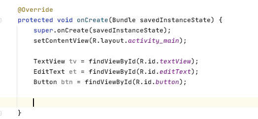
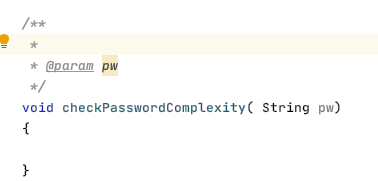
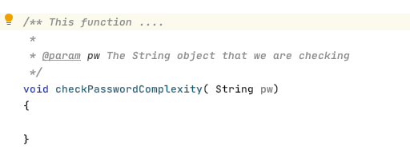

JavaDocs are a standard way in Java of commenting your code.
In Git, checkout the master branch. It should still have your first lab work with a textView in the middle and a button at the bottom.
Create a branch from here called "Week 5". We will start with this as a basis for using JavaDoc and creating unit tests. Your MainActivity.java file should only have the onCreate() function, with just the setContentView() function call:
Javadoc comments are like normal comments: /* This is a comment */, except that they start with 2 stars: /** This is a Javadoc comment */. You should put comments for your classes, your class variables (the ones with private, public, and protected in front of them), and the functions that you write that aren't part of Android. We (the professors) already know what functions like onStart, onResume, onPause, startActivity, etc. are used for, however if you declare a function that isn't inherited from a parent class, then you should comment what it does. Basically, if there's no @Override for the function, then it should be commented.
In this week's lab, you will write a simple password checker app. Add an EditText to your layout just below the TextView. It should be centered horizontally, and 32 pixels below the "Hello World" text. Change the string "Hello World" to "Type your Password:". For the button at the bottom, change the text to "Login":
Now think about which variables you'll need in Java. Give each of the three items an id, and then use findViewById() to load them in Java:

Add an onClick listener to the button so that when you click on the button, you will read the string in the EditText and check if the password is too simple or not:
You should create this function somewhere within the MainActivity class. This function should check if this string has an Upper Case letter, a lower case letter, a number, and a special symbol (#$%^&*!@?). If it is missing any of these 4 requirements, then show a Toast message saying which requirement is missing, like "Your password does not have an upper case letter", or "Your password does not have a special symbol".
Start the function declaration somewhere in your class:
Since you are writing this function and it's not an inherited function, you should write a Javadoc comment. Start by writing /** somewhere above the function declaration. Then hit the Return (or Enter) key and Android Studio should do the rest of the comment format for you:

The @param pw is meant to comment what the function parameter pw is in this case. You should write that pw is a String that is being checked:
The first line of the Javadoc comment should be a description of what this function does. Go ahead and write a sentence describing the purpose of the function.

Notice that this function returns void. Change the return type to boolean, meaning that you should return true if the password is complex enough, and false if it is not complex enough.
Inside the Javadoc, use the @return annotation to describe what this function returns:
Go ahead and implement the function to check if the String pw has all the necessary requirements. Write a for loop to iterate over each character in the String, and use the Character class' static functions isDigit( char c ), isUpperCase(char c), isLowerCase(char c). To check if a character matches any of those conditions. Before you start your for loop, use some boolean variables:
boolean foundUpperCase, foundLowerCase, foundNumber, foundSpecial;
foundUpperCase = foundLowerCase = foundNumber = foundSpecial = false;
As you find any of the conditions, set the boolean variable to true. When you are done the for loop, check that each if the variables have been set to true:
if(!foundUpperCase)
{
Toast.makeText( ... ) ;// Say that they are missing an upper case letter;
return false;
}
else if( ! foundLowerCase)
{
Toast.makeText( ... ); // Say that they are missing a lower case letter;
return false;
}
else if( ! foundNumber) { ....}
else if(! foundSpecial) { ... }
else
return true; //only get here if they're all true
There's no function for isSpecialCharacter, so you'll have to write one:
boolean isSpecialCharacter(char c)
{
//return true if c is one of: #$%^&*!@?
//return false otherwise
}
The most efficient way to write the function would be to use the fact that switch/case statements will all follow the same path until they find a break; or return statement:
Each of these cases will return true since there's no break; statement between them. Just fill out the missing cases so that these are all listed: #$%^&*!@?
If the char c is not one of the cases, then it will return false. You must also write the Javadoc comment for this function! Make sure that you write a clear description on the first line after the opening /** . Also include the @param, and @return symbols to describe the parameter, and what this function returns.
Once you are done implementing your checkPasswordComplexity() function, test your application to make sure it works. If you type in a valid complex password, then you should not see any Toast messages. Since your function returns a boolean, you can check it in an if() statement. If it returns true, set the TextView to "Your password meets the requirements". Otherwise, set the TextView to "You shall not pass!".
Just to practice documenting class variables, move all of the variables you declared in the onCreate function so that they appear at the top of the class:
Declare each of the variables as private, and then start a JavaDoc comment above each variable:
Finish off the descriptions of each variable. Lastly, go to the class declaration and put a JavaDoc comment above the line:
Put a description of what this page does. You should also use the @author symbol followed by your name to say that you wrote this code.
Use the @version to say that this is version 1.0 of your code, for example:
Go to the "Tools" menu in Android Studio and select "Generate JavaDoc..."
Click on the Folder icon beside the "Output directory:"
Click on the "New folder" button to create a JavaDoc folder in your project:
after:
and click "Open". Then, change the access level slider all the way up to "Private" so that it includes private variables and functions. Also, click the checkbox beside "@author" and "@version" so that it includes those tags in the Javadocs. Then click "Ok":
At the moment, generating the JavaDocs doesn't work through AndroidStudio. However, having the comments in the code is a good idea so that other programmers can read it. At this point, check in your code on the Week5 branch but do not push your master branch yet to the server. There is another way to merge through GitHub and you'll practice that next. Checkout your Week5 branch, but don't push it to github yet. Next, go to the next module to learn how to create unit tests.